Engineering Portfolio
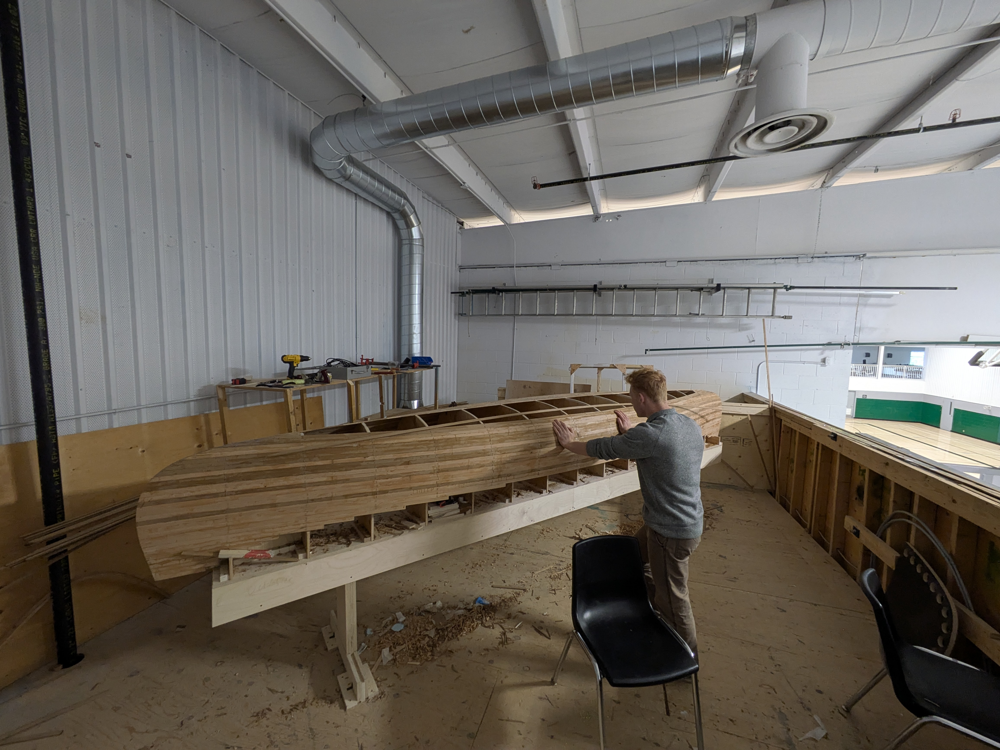
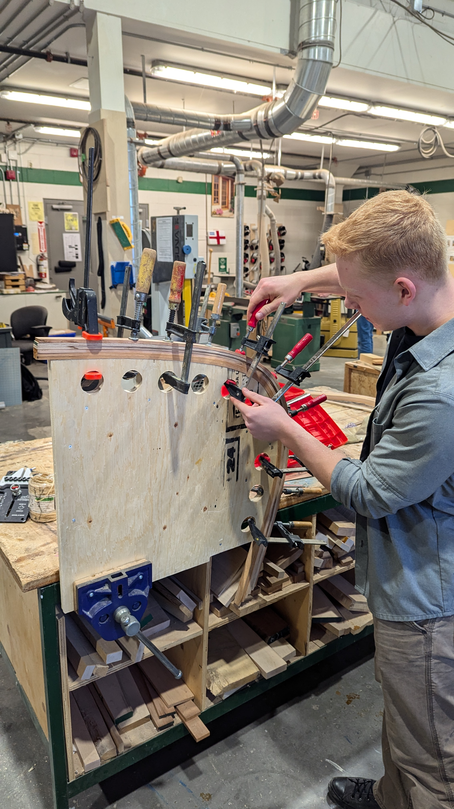
Custom Cedar Strip Canoe
I designed and built a 17-foot cedar strip canoe that mixes traditional woodworking with modern digital fabrication.
Why: I’ve always loved the outdoors and wanted to blend that passion with advancing design concepts. Building this canoe allowed for full customization of every detail while getting hands-on with CNC machining and 3D modeling.
How: We utilized CAD and 3D modeling to perfect the molds. Then, a CNC machine was used for the secondary molds to ensure high accuracy. Every cedar plank was milled from scratch to ensure a tight fit and proper adhesive bonding.
Specs: A classic 17-foot cedar strip canoe where every component was custom-made for a clean, professional finish.
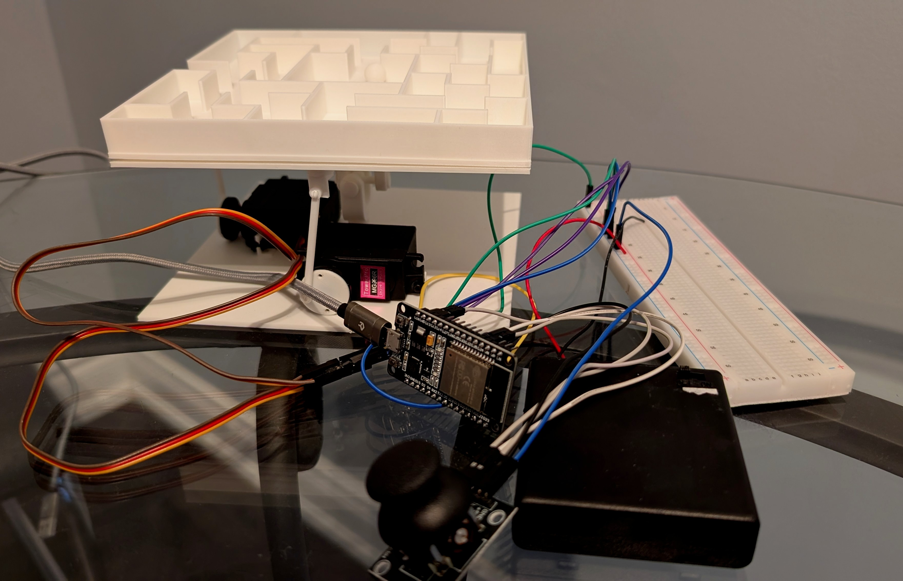
Tilting Maze Platform
I designed and created a tilting platform featuring a swappable modular maze.
Why: To gain applicable experience with microcontrollers and rotational actuation, I developed this tilting maze as a way to integrate my interests in mechanical design and embedded systems.
How: I designed and 3D printed all mechanical components, utilizing high-torque servos, a potentiometer, and an ESP32 to create a functional, responsive system. The maze module is fully swappable, supporting a variety of custom levels.
Specs: Every component, including the internal circuitry, was custom-built. I am currently integrating a webcam and computer vision code to enable autonomous navigation and toggleable control modes.
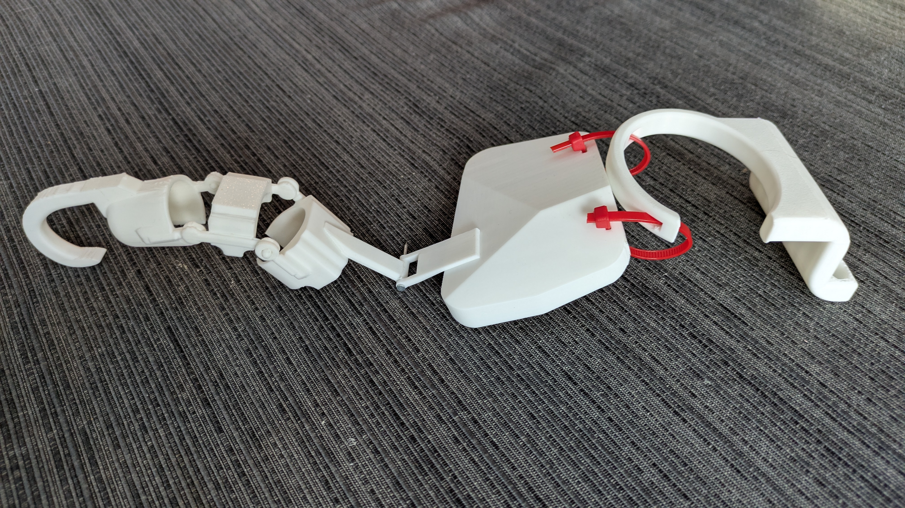
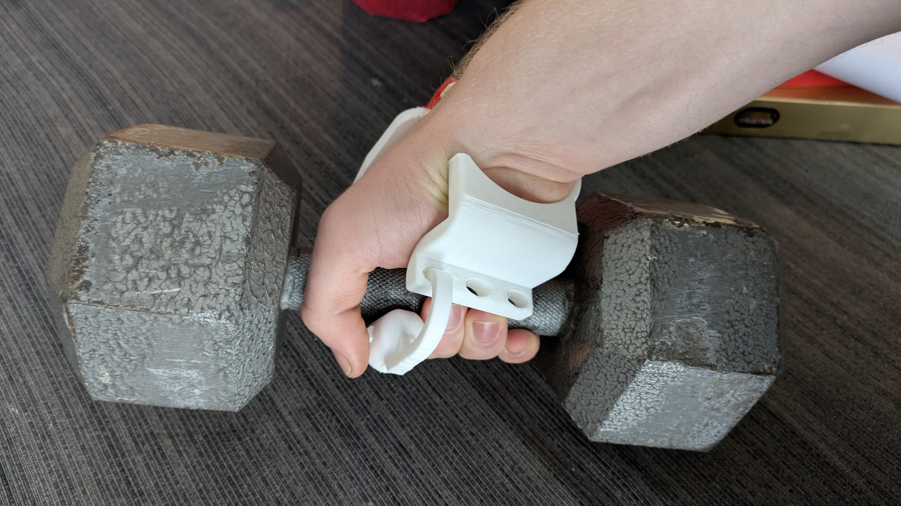
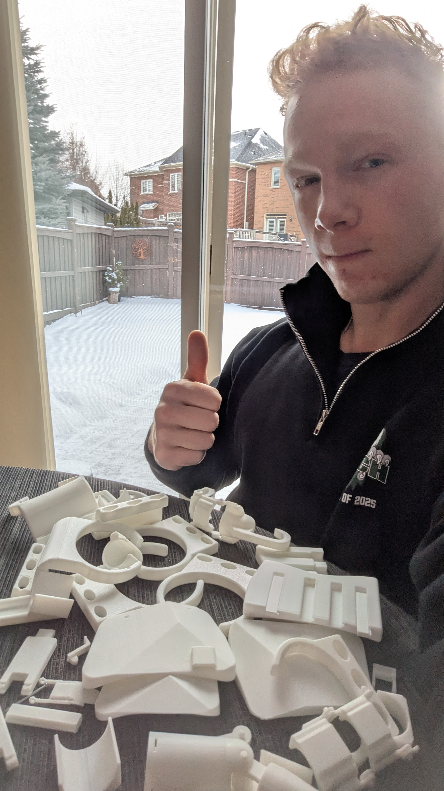
Orthotic Hand Exoskeleton
A fully mechanical, 3D-printed device designed to assist individuals with limited upper-limb mobility.
Why: This design was created to assist individuals with minimal forearm, hand, and wrist strength by shifting the heavy lifting away from the hand and forearm through a mechanical linkage.
How: I went through dozens of 3D-printed prototypes to determine the optimal design for strength and fitment, using iterative feedback to maximize user comfort.
Specs: 100% 3D-printed and purely mechanical. The design is scalable, allowing for customized support across specific fingers.
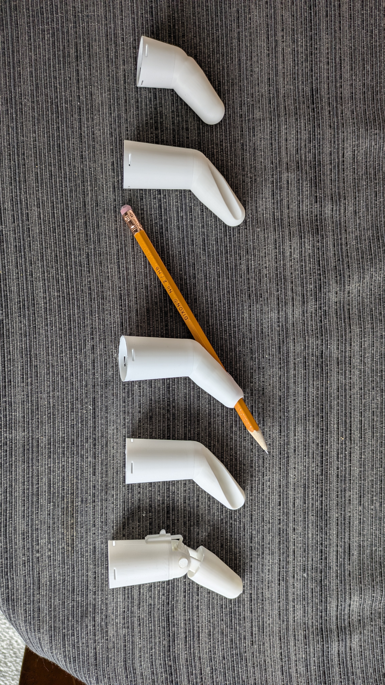
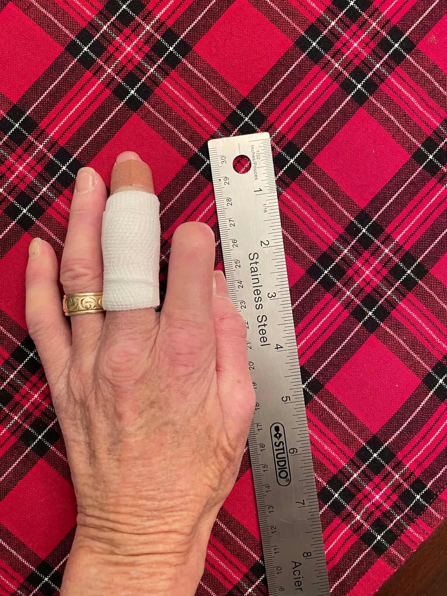

Custom Finger Prosthetics
Custom 3D-printed prosthetic fingers developed for a patient with amputations resulting from scleroderma.
Why: The primary goal was to restore writing ability and daily usability. I focused on achieving a perfect fit to ensure long-term comfort and functional reliability.
How: I modeled several ergonomic designs featuring specialized tool inserts and lockable rotation to account for various daily tasks and patient needs.
Specs: Custom-fitted and optimized for specific tasks like writing or locking in specialized orientations.
Technical Design & SolidWorks Gallery
A collection of various SolidWorks projects ranging from mechanical assemblies to aesthetic custom requests.
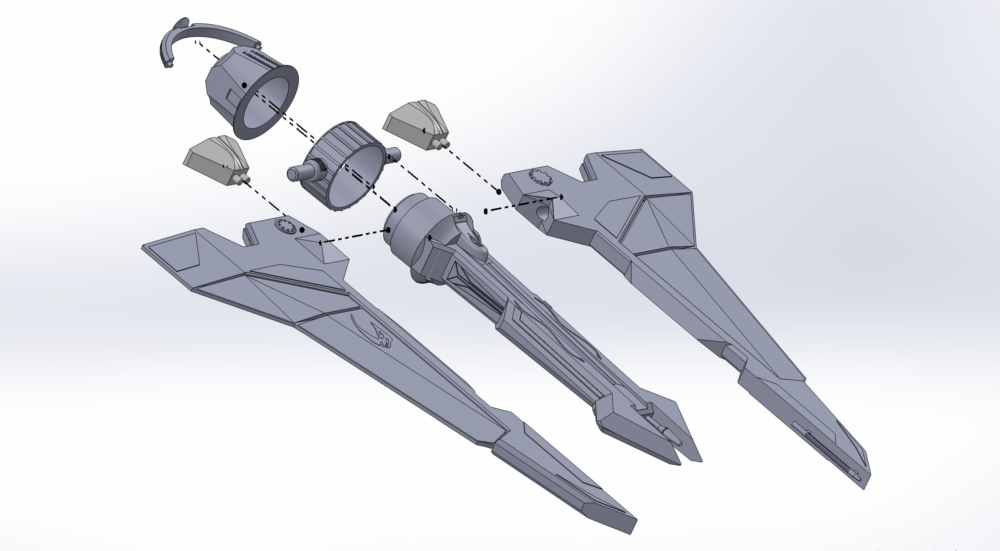
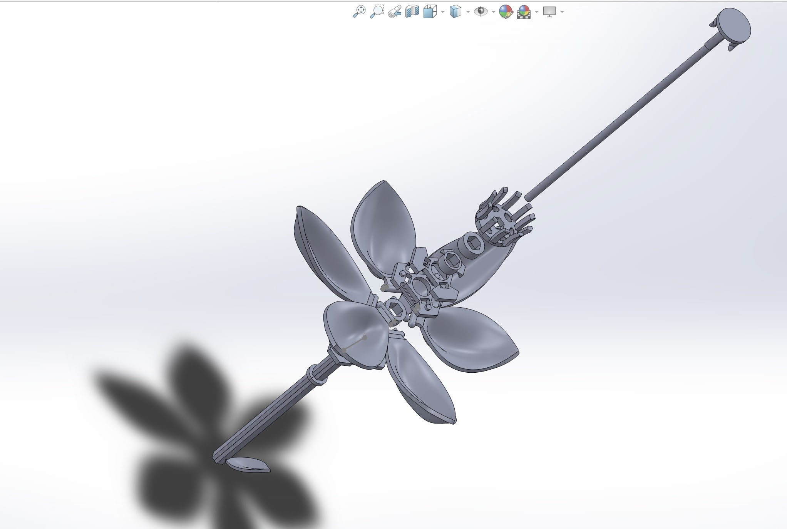
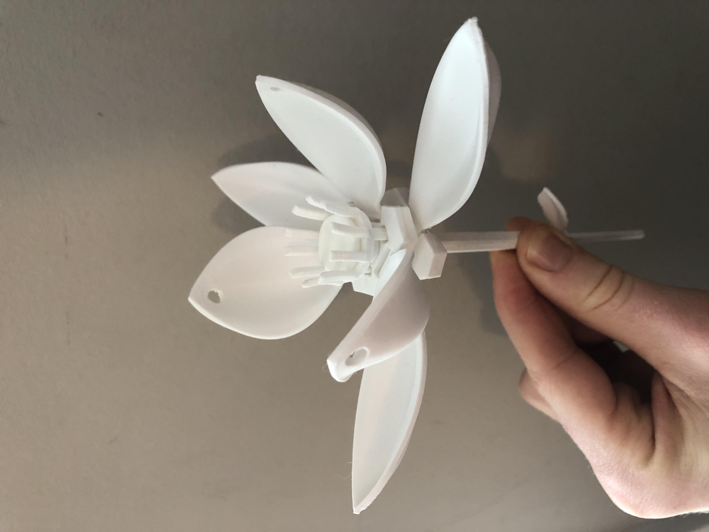
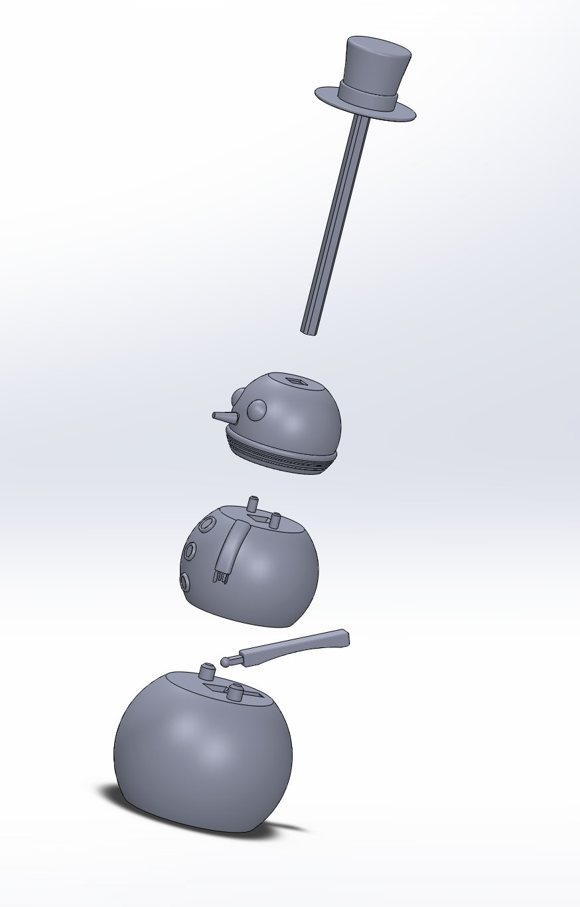
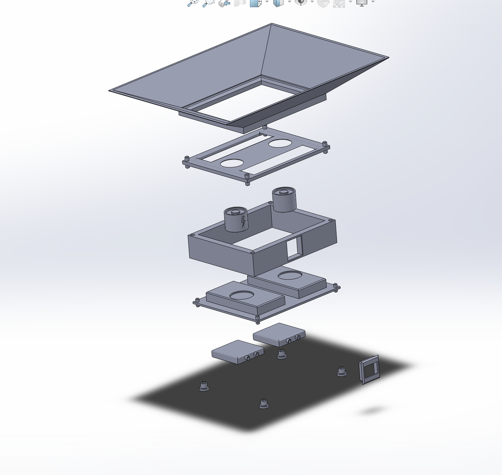
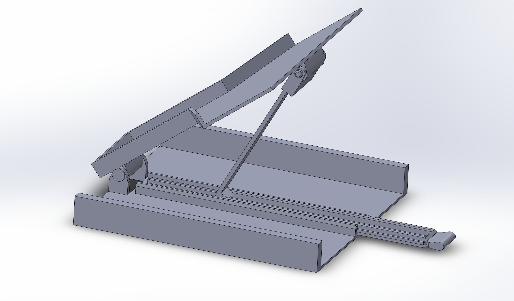